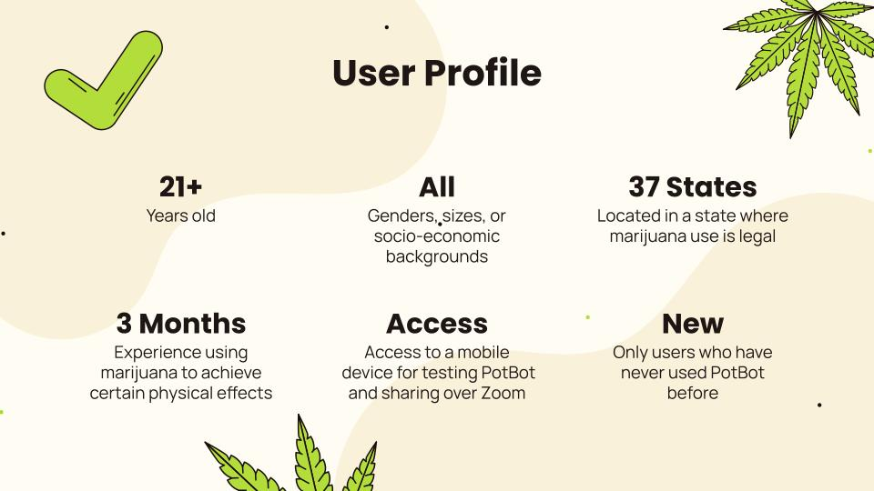
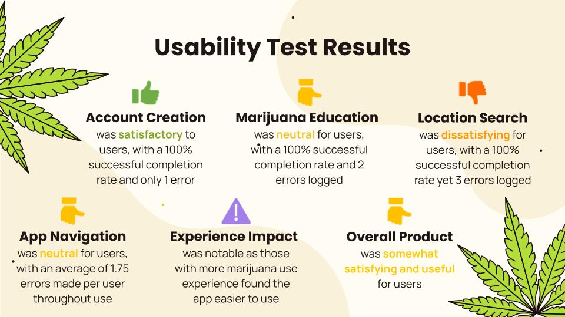
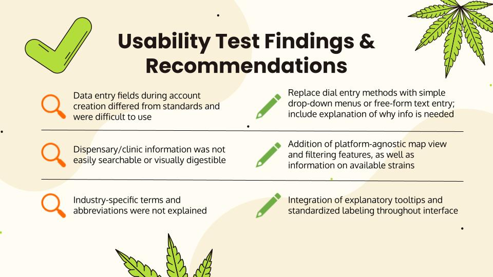
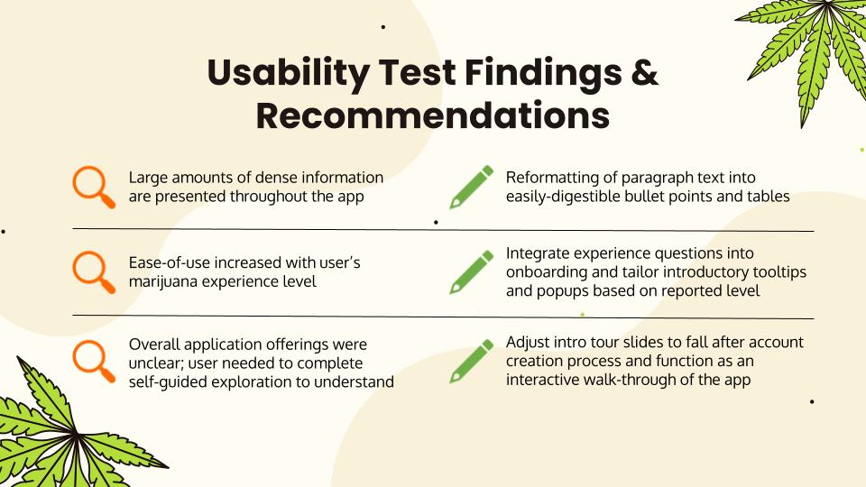
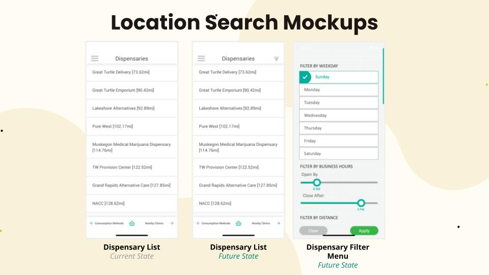
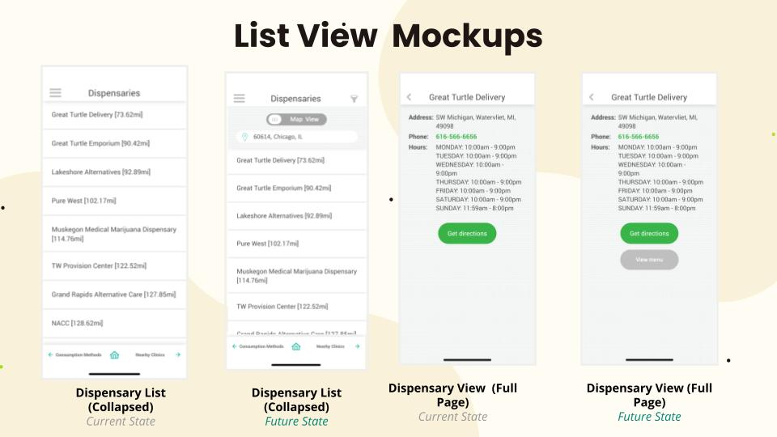
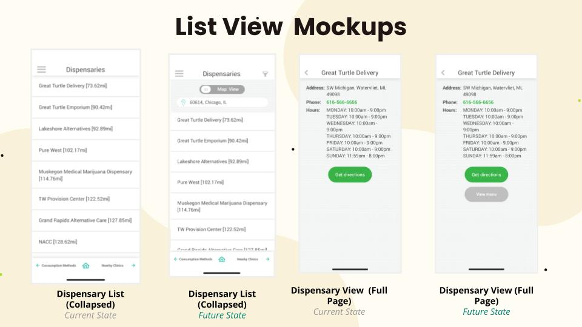

Role - Usability Specialist
Responsibilities
- Led team in analyzing and synthesis qualitative usability testing findings into meaningful insights and developed recommendations that led to informed decision-making
- Group: Devin Brown, Danielle Banton, Veronika Nowak, and Dominique Terry
- HCI 460 - DePaul University
- Spring 2022
Overview
What is PotBot
PotBot is a mobile application that helps users learn about different strains of marijuana for the treatment of specific medical conditions.
Target Users
The ideal user for this app is someone who uses marijuana to treat a medical condition and/or experience certain effects. The app can be used by individuals with any level of experience using marijuana (from beginners to experts).
Problem Statement
The PotBot application poses a potential threat to the effectiveness, efficiency, and satisfaction of the user experience. This usability test will seek to understand whether the existing account creation, strain management, and location search functionalities fulfill user needs and expectations.
Heuristic Evaluation & Cognitive Walkthrough

Key Findings & Recommendations
Simplicity & Efficiency
Currently, accomplishing individual tasks within the interface currently requires a high number of actions by the user, increasing the likelihood of errors, fatigue, and distraction. Reducing the complexity of tasks would help minimize user confusion and fatigue within the application.
Accessibility
Existing labeling and functionality in the application may prove to limit users based on identity, motor skills, etc., preventing the application from serving its full target audience. Revising existing functionality that may limit users’ ability to leverage the application, such as presets and mechanisms requiring highly accurate motor skills, will increase accessibility for all users.
Useful & Digestible Information
The application contains a high amount of information that is presented in dense and often overwhelming fashions; this may hinder the users from fully absorbing all valuable content available. Restructuring the current content and layouts to increase scannability and readability will enhance user digestion of information.
Testing Objectives
Based on the above, this usability study aims to answer the following questions:
- How easily and successfully are users able to create a PotBot account?
- How effectively does the application allow users to inform and educate themselves on marijuana use for relief?
- What, if any, challenges do users encounter when tracking and managing their experiences with particular strains of marijuana?
- How easily and successfully are users able to search for medical clinics and retail locations offering marijuana-related products and services?
- What barriers (if any) do users encounter when navigating throughout the application?
- Does the user’s level of experience using marijuana impact ease-of-use of the application?
- How effective, efficient and satisfying do users find the PotBot application?
Participants
Method
Participants will be given three tasks to complete, and we will collect error and success data for each task. We will also gather qualitative data about the participants’ emotions and experiences while working within PotBot. Each session will be run by two team members; one individual will serve as the moderator and the other will function as the observer. This arrangement was elected to enable sessions to run in parallel, ensuring that we are able to test with the highest number of possible participants given condensed timelines.
Tasks
Task #1: A friend recently told you about PotBot and you’re interested in checking it out. Please complete the first step of creating an account and setting up a profile.
Task #2: Next, you want to find a dispensary but you need somewhere that is still open after you get off work at 8pm. Use the app to find a dispensary that works with your hours.
Task #3: Before your trip to the dispensary, you want to make sure you purchase a marijuana strain that benefits you. Choose a strain for your desired relief.
Usability Results
Findings & Recommendations
 Mockups
 
